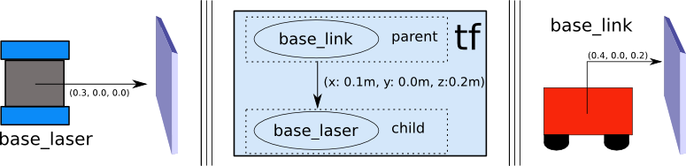

首次机器人设置指南
翻译自https://navigation.ros.org/setup_guides/transformation/setup_transforms.html
本节内容是一系列的指引：内容有：
- 帮助新用户利用Navigation2设置一个新的机器人
- 使用自定义机器人帮助人们正确地设置他们的机器人以用于ROS/Navigation2
- 为更有经验的读者提供清单、模板或样板参考.
- 提供可以在模拟器/工具上运行的示例，如Gazebo或RViz，以指导读者在没有物理机器人的情况下安装、设置Nav2。
- 概述配置某些软件包和集成机器人平台的不同组件(传感器、里程表等)的技巧和窍门
为了指导您完成机器人的第一次安装，我们将处理以下主题:
介绍TF2，设置你的机器人URDF
设置机器人里程表的传感器源
设置感知传感器源
为机器人配置圆形或任意形状的footprints
生命周期节点管理，便于启动其他相关传感器或节点
行为树的选择和设置
设置transformation
在本指南中，我们将着眼于Nav2所需的必要转换。这些转换使Nav2能够通过将传感器和里程表等不同来源的信息转换为使用的坐标系来解释信息。下面是一个机器人的完整变换树，但我们将从一些更简单的东西开始。

对于本教程，我们将首先简要介绍ROS中的转换。其次，我们将对TF2静态发布者进行简单的命令行演示，以使其实际运行。最后，我们将概述为使Nav2正常运行而需要发布的必要转换。
Transforms 介绍
很多ROS包都要求使用TF2来发布机器人的变换树，变换树定义了不同坐标系之间的关系，这包括平移，旋转和相对运动，下面我们使用一个简单的机器人模型来具体说明。
此机器人有两个定义好的坐标系，一个对应于机器人的移动底座的中心点，一个对应于安装在底座顶部的激光器的中心点。我们称连接到会移动的底座坐标系为base_link，连接到激光的坐标系为base_laser.
我们假设有一些来自激光的数据，即测量出的从激光的中心点的距离。换句话说，我们在base_laser坐标系中有一些数据。
现在我们假设我们需要使用雷达传过来的数据帮助机器人对面前的物体进行避障，为了达到此目的，我们需要把从雷达收集到的数据的坐标系base_laser转换为base_link的坐标系的数据，因此我们需要定义base_laser和base_link坐标系之间的关系。

我们假设雷达中心距离base_link中心前方十厘米，以及上方20厘米处。这给了我们一个将base_link与base_laser关联起来的平移偏移量。即，我们知道了数据从base_link到base_laser的变换，我们需要应用平移(x:0.1m，y:0.0m，z:0.2m)。因此，若是要通过base_laser到base_link的变换， 只需要反一下就行了(x:-0.1m，y:0.0m，z:-0.2m)。
我们可以选择自己管理这种关系，即在必要时存储和应用坐标系之间的适当转换，但随着坐标系数量的增加，这会引起一定的麻烦。幸运的是，我们不需要自己做整个工作，我们只需要定义base_link和laser_link一次，就可以使用TF2来为我们管理这两个坐标系之间的关系。这在涉及非静态变换的时候十分有用，比如一组相对移动的框架，比如地图框架中的机器人基础框架
为了使用TF2定义和存储base_link和base_laser俩坐标系之间的关系，我们需要将它们添加到转换树中。从概念上讲，转换树中的每个节点对应于一个坐标框架，而每条边对应于从当前节点移动到其子节点的转换。TF2使用树形结构来确保将任何两个坐标系连接在一起的都是单向连接，并假设树中的所有边都是从父节点指向子节点。

为了建立上述简单例子的变换树，我们需要创建两个节点：base_link坐标系节点和base_laser坐标系节点。并且指定哪个是父节点，哪个是子节点。千万记住：TF2默认所有的变换都是从父节点变换到子节点
我们选择base_link坐标系为父节点，因为其他的传感器是添加到他的上面的，通过base_link来找关于base_laser的关系是比较合理的，这也就是说连接base_link和base_laser的变换应该为(x:0.1m，y:0.0m，z:0.2m)。
只要我们设置了这个变换树，我们只要调用tf2库就可以轻松的得到从base_laser到base_link的转换。我们的机器人现在可以使用这些信息来推理base_link坐标系中的激光扫描，并安全地绕过环境中的障碍物。
发布静态变换案例
现在我们利用由TF2提供的static_transform_publisher工具发布一个简单的变换，发布一个从base_link到base_laser的平移变换(x:0.1m，y:0.0m，z:0.2m)
1 | ros2 run tf2_ros static_transform_publisher 0.1 0 0.2 0 0 0 base_link base_laser |
现在我们成功发布了一个从base_link到base_laser的变换，可以通过tf2_echo来查看是否发布成功
1 | ros2 run tf2_ros tf2_echo base_link base_laser |
应该返回类似于下面消息的重复信息
1 | At time 0.0 |
上面是一个很简单的例子，我们通过命令行的方式发布了一条变换，但是实际上我们并不推荐在实际的项目中这么做。在实际的机器人系统中，我们会创建一个URDF文件，里面会有相应的信息。
在Navigation2 中的变换
有两个重要的ROS REPs 是强烈推荐阅读的
为了快速总结REP 105，本文档指定了ROS中使用的不同坐标系的命名约定和语义。在此我们感兴趣的是 base_link, odom 和 map ，base_link是一个坐标系，它连接到机器人的固定位置，通常位于其主底盘和旋转中心。odom坐标系是相对于机器人起始位置的固定，主要用于距离的局部一致表示。 最后，map坐标框架是世界固定框架，用于全局一致的距离表示。
另一方面，REP 103讨论了一些标准度量单位和其他相关约定，以使不同ROS软件包之间的集成问题降至最低。 基本概述是使用右手规则定义坐标系，Z轴向上和X向前，并且单位应为标准SI单位。
现在让我们来看看Navigation2包正确运行的一些细节。Nav2需要在ROS中发布以下转换:
map=>odomodom=>base_linkbase_link=>base_laser(sensor base frames)
第一个变换map=>odom通常由处理定位和建图的不同ROS包(如AMCL)提供。这个转换在使用中实时更新，所以我们不会在我们的机器人的TF树中为它设置静态值，更多的细节建议去看你使用的ROS包的文档，所有SLAM和定位的包都会在launch的时候提供这个变换
odom => base_link通常由我们的里程计系统使用车轮编码器之类的传感器发布。这通常是通过使用robot_localization包，通过传感器融合的里程表传感器(IMU，车轮编码器，VIO等)来计算的。
所有其他静态定义的转换(例如base_link => base_laser, base_link => wheels, wheels => IMU等)是我们将在本指南的其余部分讨论的内容。Nav2利用这个变换树将传感器个机器人的其他部分进行适当的关联。这两个坐标系之间的转换通常通过Robot State Publisher和通用机器人描述符文件(URDF)提供给Nav2。如果你的平台上有更多的传感器坐标系，那么需要发布一个从base_link到每个传感器坐标系的转换树。
结论
在本教程中，我们讨论了变换的概念以及在Nav2中如何使用它们。
在上一节中，我们还探索了使用TF2的static_transform_publisher发布转换。 您可以使用它来为Nav2设置转换，但这通常不是最好的方法。 在大多数机器人项目中，我们都使用Robot State Publisher，因为随着机器人变得越来越复杂，它更易于使用和扩展。 我们将在下一个关于设置URDF的教程中讨论Robot State Publisher，URDF，以及如何设置它。
最后，我们还讨论了Nav2的三个已发布的转换要求以及在设置它们时要记住的必要REP。